Timekeeping
The Timekeeping tab allows users to input timesheet data, which can be later searched and approved by supervisors or administrators. Users with appropriate permissions can also add crew members to form teams for task assignments. Additionally, this tab facilitates the creation of timekeeping reports.
A "time slice" refers to the duration of an activity, an example is a time slice for a lunch break. A timesheet consists of multiple consecutive time slices that cover a day's work. Field technicians are required to log time spent on each task, creating slices in the system to document completed work for the day.
Crew leads have additional privileges, including adding crew members, inputting timesheet data for them, and submitting timesheets for both themselves and their crew. Timesheet data can be added manually or by opening a work item and adding it to the timesheet.
Functionalities within timekeeping include:
- Timekeeping Searches
- Timekeeping Approvals
- Crew management
- Timekeeping Reports
Search
Users can utilize the Search Timesheets tab to monitor timesheets and their statuses. Crew leads can view timesheets submitted by themselves and their crew members. Search parameters can be adjusted to narrow down results.
Create a search.
-
In the IWMS Client application, click the Timekeeping tab.
-
Enter data in one or more fields on the Search Timesheets page to narrow down search and get the required timesheets
-
Click Search.
-
The results should be displayed.
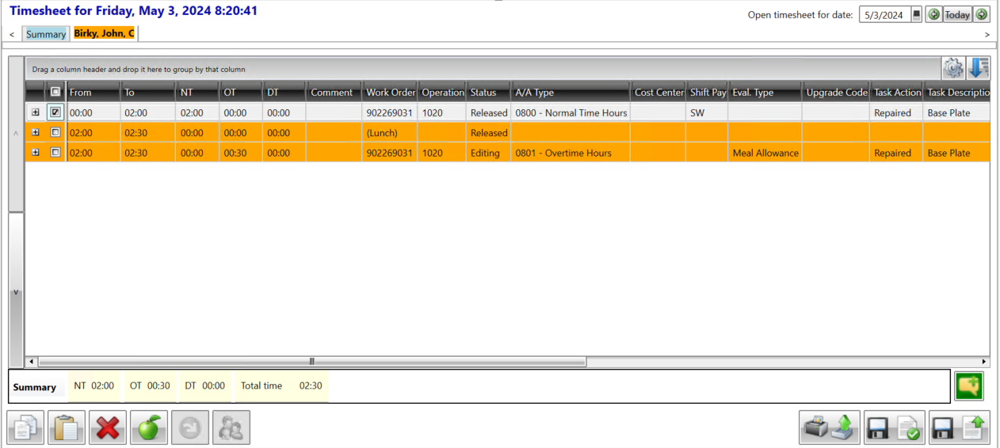
Max results
This drop-down allows the user to select the maximum number of results
they want displayed from the search. Varying from: 50%, 100%, 200%, 500%, 1000%, 2000%.
Saved searches.
The user can utilize the Saved Searches feature to establish and retain specific search parameters. This enables the user to swiftly retrieve necessary records without the need to input search criteria repeatedly when browsing timesheets.
Saving a search:
-
Navigate to the Timekeeping tab within the IWMS Client application.
-
Input data into one or more fields on the Search Timesheets page to refine the search and obtain the desired timesheets.
-
Initiate the search by clicking on the Search button.
-
Click on the adjacent Save icon next to the Saved Searches button.
-
A dialog box titled Save Search will appear. 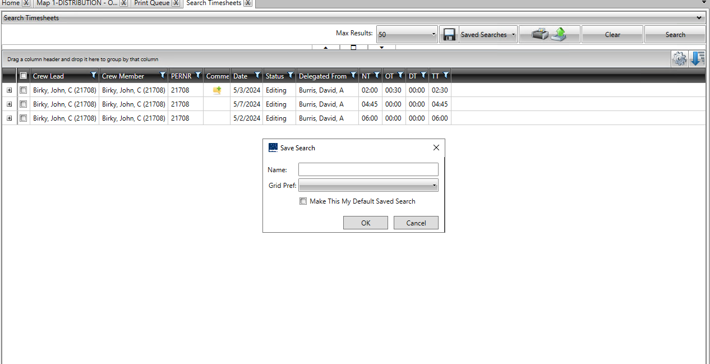
-
Enter a descriptive name for the saved search in the Name field. This name will be used when selecting a saved search.
-
From the Grid Preference list, choose a column preference. This will determine which columns are displayed based on the selected grid preference. For further details on grid preferences, refer to the Configure grid preferences section.
-
To designate this saved search as the default, tick the Make This My Default Saved Search checkbox.
-
Confirm the selections by clicking OK.
-
Access Saved Searches. The name of the newly created saved search will be visible.
Saved searches.
Allows the user to save a filter that the user has made for future use. To save a search the user must first fill in a search then click on the save button.
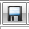
The following popup shows up to enable the user to save the search. They
can also choose to make the search default.
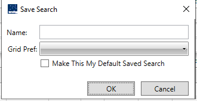
Manage crews.
The user can use the Manage Crews button to manage the crew members by adding or removing crew members.
The following page opens after the user clicks on Manage Crews:
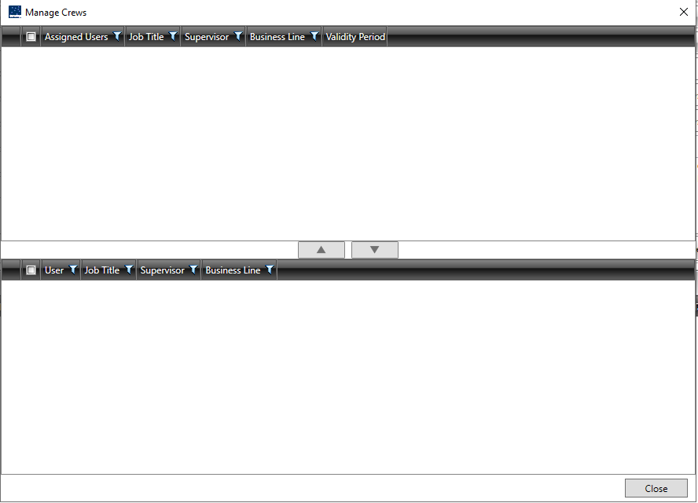
Export
The user can use the Export button to export the searched records in formatted or non-formatted options. They can choose either to export to excel or to CSV. They can select the required items from the grid or can export all the items to a Microsoft Excel file.
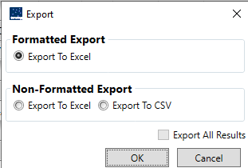
Print and Export
This button allows the user to print and export. To print, select the files or documents the user needs to print and then click on the Print and Export button.
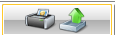
Clear
Clears the search that was previously made. All fields that were previously filled will now be empty allowing the user to start the search afresh.
Summary View
The user can use the Summary View button to view the summary of the timesheets based on the search result that is displayed. Open the Summary View dialog box by clicking the Summary View button.
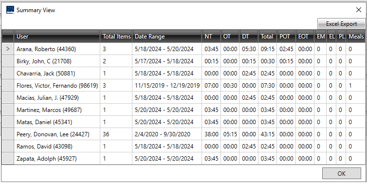
Toggle grouping.
The user can utilize the Toggle Grouping button to enable toggle grouping when the search results in the grid are grouped by selecting columns displayed in the grid. By employing toggle grouping, the user can expand or collapse the rows shown in the grid.
To toggle groups:
- In the search results grid, click on the Toggle Grouping button.
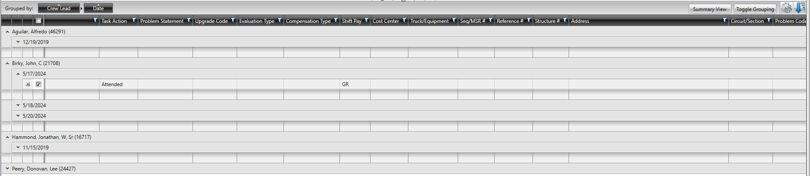
- The rows in the grid will be expanded. The user can click on
Summary View to collapse the rows.
Grid preference.
Instead of a static table, the application shows the data in a customizable grid. This grid lets the users pick which columns to display, drag them to change order, and even hide the columns that are not needed, allowing the user to save these preferences as different views. 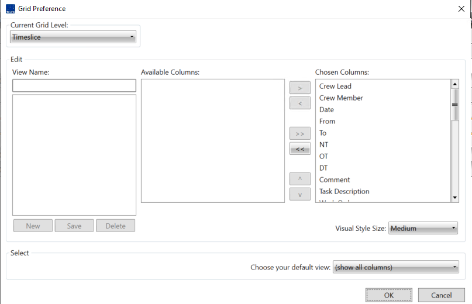
Timekeeping Approvals
The admin can approve the Timesheet using grid or Timeslice.
Supervisors can approve timesheets on the Approval page.
Pre-approvers, designated by supervisors, can pre-approve timesheets.
Users can utilize various functions on the Approval page, such as viewing all pending time slices or approving/rejecting them collectively.
Approve timesheet from the Client application.
- Navigate to IWMS application then Time Keeping tab then Approvals.
The Timekeeping Approval page is displayed.
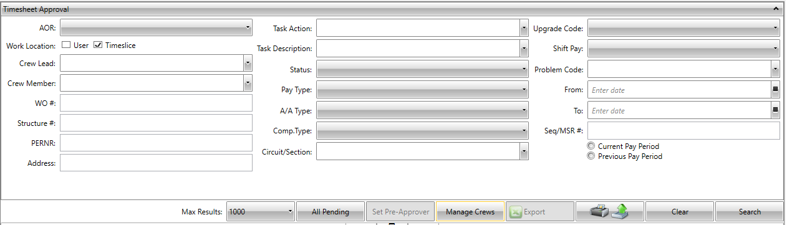
- Click Current Pay Period or Previous Pay Period.
- Enter the timekeeping approval details in the following fields.
| Field | Description |
|---|---|
| AOR Dropdown | Select an AOR. |
| Note: | Click Check all to select all the AORs check boxes. Click Uncheck all to clear all the AORs check boxes. Also, the user can select or clear one or more AOR check boxes. |
| Work Location Dropdown | Select the work location, which is one of the following: User or Timeslice. |
| Crew Lead Dropdown | Select the crew lead name. |
| Crew Member | Select the crew member name. |
| Dropdown | |
| WO # Field | Type a work order number. |
| Structure # Field | Enter a structure number. |
| PERNR Field | Enter a personal identification number. |
| Task Action | Select a task action. Based on the task action the user selects, the Task Description list is populated. |
| Dropdown | |
| Status Dropdown | Select a status. |
| A/A Type Dropdown | Select an A/A Type. Based on the pay type the user selects, the Comp. Type list is populated. The Comp Type list is populated when the options selected in the Pay Type list and the A/A Type list are related to compensation. |
| Comp. Type Dropdown | Select the compensation type. |
| Circuit/Section | To select a circuit or section, do one of the following: - In the Filter box, enter the first few characters of the circuit or section that the user wants to search. - Click Check all to select all the checkboxes. Click Uncheck all to clear all the checkboxes. Also, the user can select or clear one or more checkboxes. |
| Max Results | Select the maximum number of results to be displayed during search. |
| Upgrade Code | Select an upgraded code. |
| Shift Pay | Select a shift pay. |
| Problem Code | Select a problem code. |
| From | Select a from date. |
| To | Select a to date. |
| Seq/MSR # Field | Enter the sequence number or the Meter Service Request number. |
- Click Search
The grid containing the timesheets is displayed.
5.Click to select the timesheets to approve and then click on the Approve All button.
6.Click on the submit button to submit the approved timesheets.
Approve All
This button at the bottom left of the Timekeeping approval page allows the user to approve all timesheets that are pending or that have been selected. To select all the pending timesheets the user will have to click the All pending button.
Reject All
This button at the bottom left of the Timekeeping approval page allows the user to reject all timesheets that are pending or that have been selected. To select all the pending timesheets the user will have to click the All pending button.
All Pending
The user can use the All-Pending button to view all the time slices that are pending for approval. The user can select a time slice to approve or reject it.
Set Pre-Approver
A pre approver is a crew lead upgraded by an approver to preapprove timesheets. When a pre- approver is made active, a supervisor can approve a timesheet only if the pre approver has approved the timesheet. If the pre approver rejects a timesheet, it is sent back to the crew lead.
Saved searches.
Allows the user to save a filter that the user has made for future use. To save a search the user must first fill a search then click on the save button.
The following popup shows up to enable the user to save the search. They
can also choose to make the search default.
Manage crews.
The user can use the Manage Crews button to manage the crew members by adding or removing crew members.
The following page opens after the user clicks on manage crews:
Export
The user can use the Export button to export the searched records in formatted or non-formatted options. They can choose either to export to excel or to CSV. They can select the required items from the grid or can export all the items to a Microsoft Excel file.
Print and Export
This button allows the user to print and Export. To print, select the files or documents the user needs to print and then click on the Print and Export button.
Clear
Clears the search that was previously made. All fields that were previously filled will now be empty allowing the user to start the search afresh.
Crew Management
The user can use the Crew Management page to manage the crew members. The crew management page allows the user to:
- Add crew members
- Remove crew members
- Add a subcrew
- Remove a subcrew
Add Crew members.
The user can add crew members to the crew. To add members to the crew, the user must search the members. After a crew member is added, the user can view or submit timesheets for the crew member.
To add a crew member:
-
In the IWMS Client application, click the Timekeeping tab. The Timekeeping group is displayed.
-
In the Timekeeping group, click Crew Management. The Crew Management page is displayed. 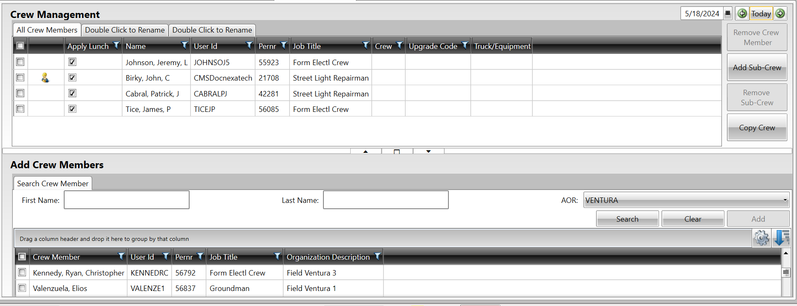
-
In the Add Crew Members section, do one or more of the following:
-
In the First Name box, type a member's first name, fully or partially.
-
In the Last Name box, type a member's last name, fully or partially.
-
In the AOR list, select an area. The user can click Select All to widen the result.
-
-
Click Search. The members that pass the earlier three filters are displayed in the grid.
-
Select the check boxes adjacent to one or more member names to add the crew members. The Add button in the Add Crew Members section is made available.
-
Click Add.
Remove Crew members.
The user can remove crew members from crew. After the user removes a crew member from the crew, the user cannot view the timesheet details of the removed member.
To remove a crew member:
- In the IWMS Client application, click the Timekeeping tab. The Timekeeping group is displayed. In the Timekeeping group,
-
Click Crew Management.
-
The Crew Management page is displayed. In the Crew Management section, select the one or more checkboxes adjacent to the members' names that the user wants to remove.
-
The Remove Crew Member button is made available. Click Remove Crew Member button. 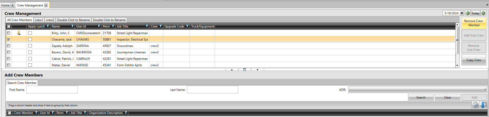
- The system displays an alert message asking the user to confirm whether to remove the selected one or more crew members. Click Yes to remove the crew member.
The crew member is removed from the grid.
Add Subcrew
The user can group the crew members by creating a subcrew and moving the members to the respective groups. The user can use the subcrew as a filter to quickly identify the crew members in that specific subcrew.
To add a sub-crew
-
In the IWMS Client application, click the Timekeeping tab.
-
The Timekeeping group is displayed. In the Timekeeping group, click Crew Management.
-
The Crew Management page is displayed. In the Crew Management section, click Add Sub-Crew.
-
A new tab with the title Double Click to Rename is added in the Crew Management section. Double-click the tab title, and then type a name for the subcrew. 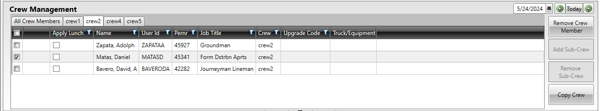
-
It is recommended to name a subcrew that helps the user identify the members in the sub crew, by reading the subcrew title. For example, if the crew members in the subcrew are from the same geographical region, The user can use the name of the area. In the Crew Management section, on the All Crew Members tab, do one of the following:
-
Right-click the member's name that the user wants to move to this subcrew.
-
Select the check boxes adjacent to the members' names to move multiple crew members to a sub crew, and then right-click the selected rows in the grid.
-
-
The Move to pop-up menu is displayed. On the Move to pop-up menu, right-click to display all sub crews, and then click a subcrew name.
The crew members are displayed in the clicked sub crew.
Remove Subcrew
The user can remove a subcrew on the Crew Management page, if the user does not require the subcrew. For example, if the user has created a subcrew by the name of an area, and most crew members in the subcrew are assigned to another work area.
To remove a sub-crew:
-
In the IWMS Client application, click the Timekeeping.
-
The Timekeeping group is displayed. In the Timekeeping group, click Crew Management.
-
The Crew Management page is displayed. In the Crew Management section, select a subcrew.
-
The members in the subcrew are displayed in a grid. The Remove Sub-Crew button is made available. Click Remove Sub-Crew.
The selected subcrew is removed from the Crew Management section.
Timekeeping Reports
Various reports can be generated by selecting the appropriate option, including CMS Reports, Contract Interpreted Reports, and SAP Reports. Time slices are required to generate these reports.
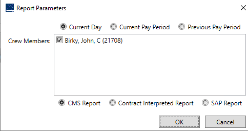